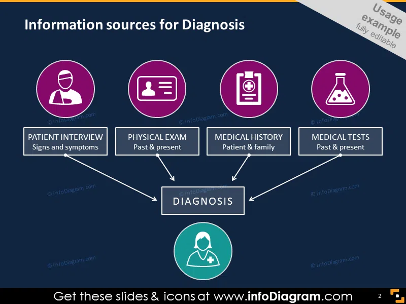

The Future of AI in Medical Diagnosis


Table of Contents
Artificial intelligence is rapidly transforming the field of medical diagnosis, offering unprecedented opportunities to enhance accuracy, efficiency, and accessibility in healthcare. As a medical professional with a passion for technology, I've been closely following these developments and want to share insights into how AI is reshaping diagnostic medicine.
The Current Landscape of AI Diagnostics
AI-powered diagnostic tools are already making significant impacts in several medical specialties:
- Radiology: AI algorithms can detect abnormalities in X-rays, CT scans, and MRIs with accuracy rivaling human radiologists. Recent studies show AI can reduce interpretation time by 30% while maintaining 98% accuracy in detecting common pathologies.
- Pathology: Machine learning models analyze tissue samples, identifying cancerous cells with remarkable precision. The latest systems achieve 99.5% accuracy in distinguishing between benign and malignant breast cancer biopsies.
- Ophthalmology: Retinal scans interpreted by AI can diagnose diabetic retinopathy and other eye conditions. The FDA-approved IDx-DR system demonstrates 87% sensitivity in detecting more than mild diabetic retinopathy.
- Dermatology: Image recognition AI helps identify suspicious skin lesions that may indicate melanoma. Studies show convolutional neural networks matching the performance of board-certified dermatologists in classifying skin lesions.
"AI won't replace doctors, but doctors who use AI will replace those who don't. The future belongs to clinicians who can effectively collaborate with intelligent systems." — Dr. Eric Topol, Author of "Deep Medicine"
Technical Foundations of Diagnostic AI
The most effective diagnostic AI systems typically combine several technological approaches:
1. Deep Learning for Image Analysis
Convolutional Neural Networks (CNNs) have revolutionized medical image interpretation. These algorithms learn hierarchical patterns from vast datasets of labeled medical images, enabling them to recognize subtle abnormalities that might escape human notice. Recent advancements like Vision Transformers (ViTs) are pushing accuracy even further by modeling long-range dependencies in images.
2. Natural Language Processing for Clinical Notes
NLP algorithms extract meaningful information from unstructured physician notes, lab reports, and other text-based medical records, helping to identify diagnostic patterns across patient populations. Transformer models like BERT and GPT are being fine-tuned to understand medical jargon and contextual relationships in clinical documentation.
3. Multimodal Data Integration
The most advanced systems combine imaging data with lab results, genomic information, and electronic health records to generate comprehensive diagnostic assessments. For example, Google Health's multimodal AI can predict patient outcomes by analyzing diverse data types simultaneously, achieving superior performance to single-modality models.
Clinical Benefits and Challenges
The implementation of AI diagnostics offers several key advantages:
- Improved Accuracy: Reduces human error and variability in interpretation. AI doesn't suffer from fatigue or cognitive biases that affect human diagnosticians.
- Increased Efficiency: Processes large volumes of data quickly. AI can prioritize urgent cases and automate routine analyses.
- Enhanced Accessibility: Brings specialist-level diagnostics to underserved areas through telemedicine platforms.
- Early Detection: Identifies subtle early signs of disease progression that may be imperceptible to human observers.
Key Takeaways
- AI diagnostic tools are achieving specialist-level accuracy in multiple medical domains
- The most effective systems combine deep learning, NLP, and multimodal data integration
- AI can enhance diagnostic accuracy, efficiency, and accessibility but requires careful implementation
- Future developments will focus on augmented intelligence rather than replacement of physicians
- Ethical considerations around bias, transparency, and accountability remain critical
However, significant challenges remain:
- Algorithmic Fairness: Ensuring models perform equally well across diverse patient populations and don't perpetuate existing healthcare disparities.
- Clinical Oversight: Maintaining appropriate physician involvement in the diagnostic process while leveraging AI capabilities.
- Data Privacy: Protecting sensitive patient information while training models on large datasets.
- Regulatory Approval: Navigating evolving FDA frameworks for software as a medical device (SaMD).
- Interpretability: Developing explainable AI systems that clinicians can understand and trust.
The Future: Augmented Intelligence in Medicine
Looking ahead, I believe the most promising applications will focus on augmented intelligence rather than artificial intelligence - systems designed to enhance rather than replace physician decision-making. Key areas of development include:
- Predictive Diagnostics: AI models that can forecast disease risk before symptoms appear, enabling truly preventive medicine. For example, researchers are developing algorithms that can predict Alzheimer's disease up to 6 years before clinical diagnosis using brain scans.
- Personalized Treatment Planning: Systems that recommend tailored therapies based on a patient's unique characteristics, including genetic profile, lifestyle factors, and treatment history. This approach is particularly promising in oncology.
- Real-time Decision Support: Tools that provide clinicians with evidence-based suggestions during patient encounters, integrating the latest research findings with individual patient data.
- Longitudinal Health Monitoring: Continuous AI analysis of data from wearables and other IoT devices to detect health deviations early.
As medical professionals, we have both an opportunity and responsibility to shape how these technologies are implemented to maximize patient benefit while maintaining ethical standards and humanistic care. The most successful healthcare organizations will be those that strategically integrate AI to augment (not replace) clinical expertise, while addressing the legitimate concerns around bias, transparency, and accountability.